Victoria 3
| グラフィック | ☆☆☆☆ | 4 |
|---|---|---|
| 音楽 | ☆☆☆☆☆☆ | 6 |
| ゲーム性 | ☆☆☆☆☆☆☆ | 7 |
| ストーリー | ☆☆ | 2 |
| ユーザー視点 | ☆☆ | 2 |
評価というのはとにかく書くのが難しい。
そうである中、この作品はとかくも評価が難しかった。
極論をすると、この作品はとても異質であるし、本格的であるし、
ゲーム的であると言えよう。
プレイ時間は約300時間ほどで短い方ではあるが、一旦ここで評価してみたいと思う。
「 政治 と 法律 と 経済は 二の次 」
まあ、そう言うな。そういうと思ったよ。ただね、そういう事から言い始めると
ゲームとは何たるかを語る事が出来なくなってしまうのだよ。
本サイトはあくまでもカジュアルに評価する事を目指すので
あまり本格的な事は語りたくはないのだ。
というわけで、抽象的になりすぎないよう、ここではとある国Tuscany（トスカーナと呼ぶ事にする）について
ストーリー的に描きつつ、解説を試みたい。最初の一手はこうだ。
「農村民に優しくしよう」
このゲーム、１８３6年からスタートするのだが、最初の時は農村民達の食料が不足している状態である。
まずはこれを解消しなくてはならない。なお、解消する必要性がある国、無い国、放っておいても大丈夫な国。
など色々あるわけだが、ここトスカーナの農村民は比較的あまり良い暮らしは出来ていない。
なので、まずやるべきことは農村民に生きて行ける生活の場を与える事だ。
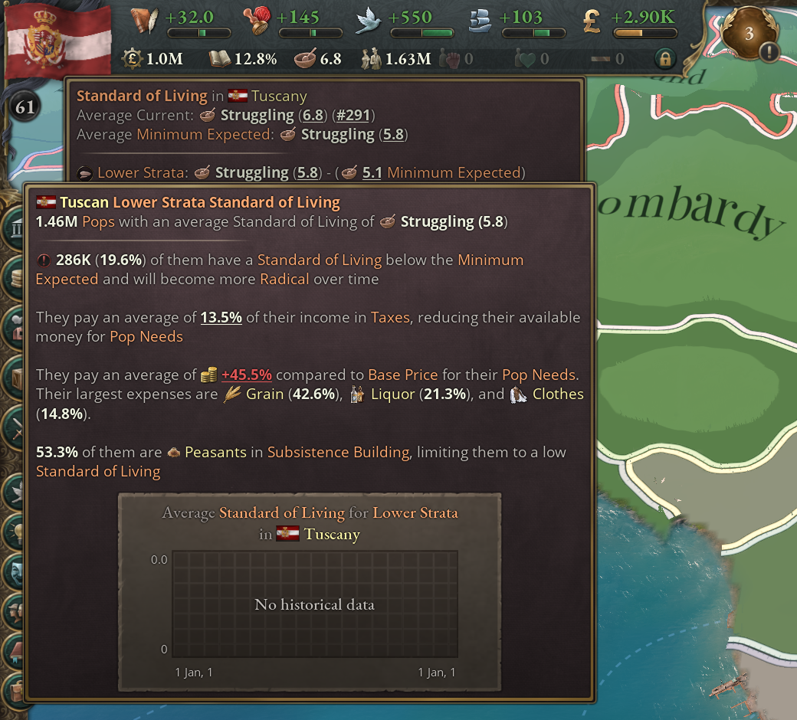
本画面に表示されているのが、Standard of Livingだ。この値がある程度良い値を保っていないと農村民は
死んでいってしまう（酷い時代ではある）。本画面は6.8なので極めて低い状況である。一刻も早く解消しよう。
そのためには食料を確保する必要がある。そのトップ３として、農村民が求めているのはGrain。つまり穀物だ。
食料はその他も色々あるが、このTOP3に出ている穀物を早急に確保する方針でまず良いだろう。
おっと、そういえば重要な解説を忘れていた。このゲーム。実はコレといったゴールが無いのである。
なのでゲームプレイする時は、自らが何らかの視点を持ってゲームプレイした方が良いだろう。
本ページでは下記としている。
選んだ国
Tuscany（トスカーナ）
ゴール
イタリア国家を形成する。ただし形成するのは、我らトスカーナが行う事！
（列強１位は狙わなくて良い）
制限ルール
移民政策を行わない。（本ゲームの醍醐味かもしれないが、個人的にその行為自体が好きじゃない）
最強理論は狙わない。ある程度途中で損をしても良いので解説寄りとする事。
自国貿易を基点とする。（Join Customs Union禁止）
緩和ルール
アイアンマンモードにしない（セーブ・ロードはOKとする）
サルデーニャ・ピエモンテや両シチリアなどをチョイスした方がより良かったのでは？という声も聞こえる。
だが私は直観的にこのトスカーナを選んだ。選んだ理由は首都の名称”Florence”が気に入ったからだ。
有利不利で始めるわけではない。ゲームプレイとしては、「好きかどうか」が最重要なのである。
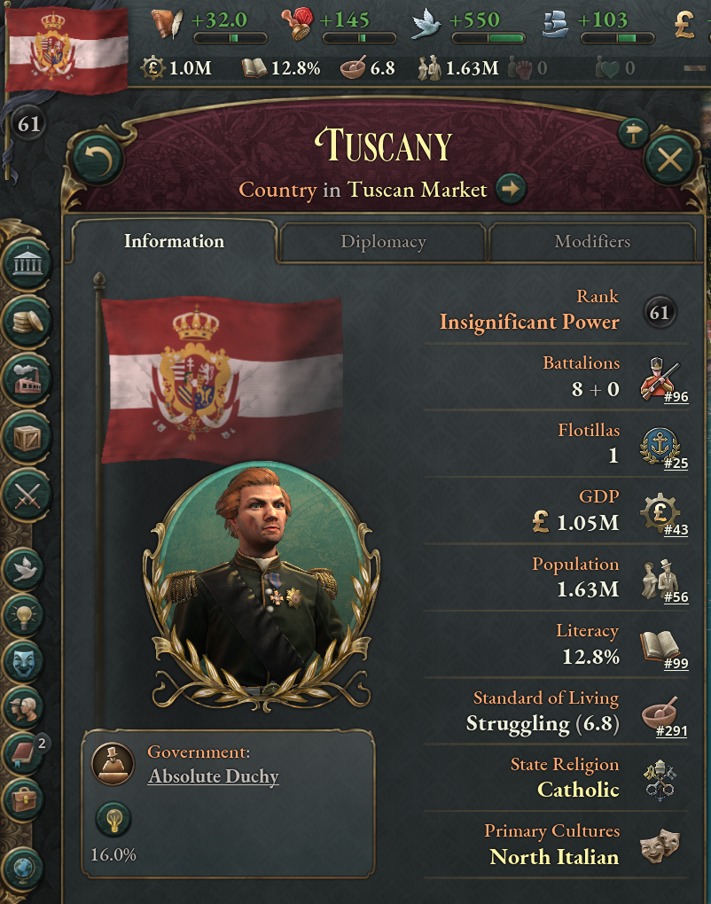
世界ランク６１位。武力８。GDP 1.05M。Population 1.63Mだ。何とも微妙な国だが致し方あるまい。
で、先の話に戻ると、Standard of Livingが6.8と低いので、ここをまず解消する事とした。
ザっと書けばこうだ。
・貿易で穀物を輸入する。
・地元でWheatFarmsを強化する。
・Encourge Agricultural Industryを選択しておく。
これで農村民達は救われるだろう。全てを救済する事はかなわないが壊滅的な状況にはならなくなる。
次は基本的な製造業の確立だ。2024年現在とは違い、当時は製造業そのものがどう振る舞っていけば良いかわからない時代。
最初は国主導の元で建設していくしかない。詳しい建設順序は記載しないが概ねこうだろう。
・Construction Sector
・Tooling Workshop
・Textile Mills
建設セクタとツール生成は基本中の基本として、本ページでは「Textile Mills」を選択した。
トスカーナはSilkPlantationsがあるので、衣服を作る方が後々貿易黒字化が見込めると考えたからだ。
多少赤字が続くかもしれないが、本ゲームは資本の概念で形成されているので赤字＝ゲームオーバーとはならない。
ある程度の赤字は覚悟で投資していくと良いだろう。
「注意」
目先の利益よりも、多少先の収益性を考えて動いた方が良い、と考えた方が無難である。
考えなければいけないのは、確かに安定した生活かもしれないが、いつまでも
「木材、穀物、肉」だけでは、やがて到来する産業革命の波にはついていけなくなる。
このゲームはそういうゲームである。と筆者は読んでいる。色々と考え方、やり方はあるだろうが、
ここでは本作品の一般的な筋はこれかな、と思われる施策を記載するに留める。
時は過ぎ、ある程度地盤が出来てきたんじゃないかな。
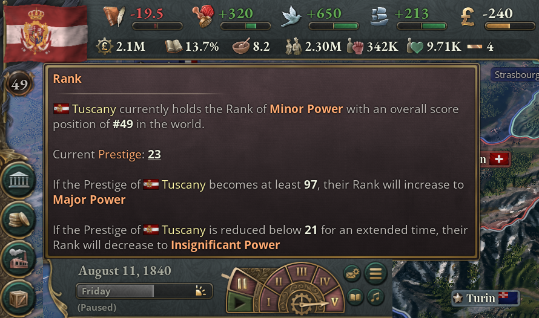
※画像は情報集約により現在日時を画面内に持ってきています※
1840年8月11日、それなりにキープはできている。悪くないだろう。
ところで、左上バーの数値は何だろうか。
-19.5、+３２０、＋６５０、＋２１３、-240
2.1M、13.7%、8.2、2.30M、342K、9.71K、4
これも1つ1つ全解説は控えるが、ザっと見ておいた方が良いだろう。
プライマリは以下の通り。
・Bureaucracy ( -19.5) ・・・ 行政の力。この値が低すぎると民を先導できなくなる。
・Authority ( +320) ・・・ 権限の力。この値が低すぎると法律改定ができなくなる。
・Influence (+650) ・・・ 影響の力。この値が低すぎると他国への影響が出せなくなる。
・Convoys (+213) ・・・ 輸送かな。この値が低すぎると貿易できなくなる。
・Money (-240) ・・・ 金。以上。
セカンダリは以下の通り。
・GDP (2.1M) ・・・ 国内総生産。つまりGDPである（解説省略）
・Literacy (13.7%) ・・・ 識字率か。この値が低いと研究が進まない。
・Standard of Living (8.２) ・・・ 民の経済状況。この値が低いと貧困でゲーム開始地点すらままならない。
・Population (2.30M) ・・・ 人口、つまりPOP。民が集まってこないと何も始まらない。
・Radical (342K) ・・・ 文句をいう人達。放っておきましょう（ウソと言いたい所だが、半分は本当）
・Loyalist (9.71K) ・・・ 良い意見をいう人達。放っておきましょう（ウソと言いたい所だが、半分は本当）
・Infamy (4) ・・・ 影響阻害要因か。この値が０ならまあ問題ない。高くなってきたら・・・どうなるんだろう？
色々とあるが、どれが重要か？と考えない方がよい。どれもこれも重要である。
あらゆる要素が絡みあってくるので、全ての値を注視して進めると良いだろう。
本ページの取り上げ方は異色かもしれないが一例をあげておこう。
トスカーナの法律を早めに切り替えたかったので、Autorityは±0を狙わずプラスにするようにした。
貿易の範囲が小さいので、影響力がヘタれないようにInfluenceも多めに確保（Rivalで底上げしただけ）
Convoyも不足する事が無いよう多少増強しておいた。（Portを追加しておく）
GDPは序盤なので特に意識せず。軌道に乗るまでは眺める程度。
Literacyも最初は手が出せないので意識せず。
Standard of Livingは確保した値が急激に減ってないかどうか常時監視。
POPはトスカーナはあまり手が出せないので眺める程度。
RadicalとLoyalistは放っておいた（おそらく国が違うと見え方も違うが、気にしない）
さて、時は過ぎて・・・
1846年1月26日
隣国のLUCCAを占拠！！
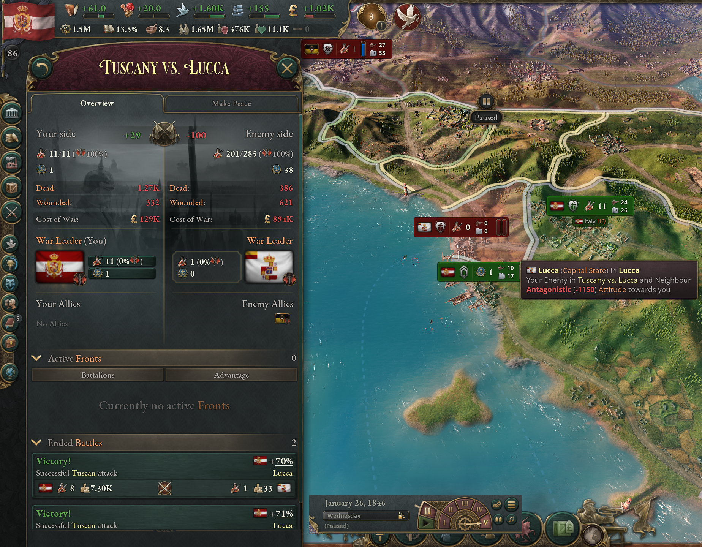
悪く思わないで欲しい。ただ、我々は純粋にイタリアを建国したいだけなのだ。
ゲームルールとして戦争を行わないとは記載していない。場合によっては強引な手法で経済を勝ち取るのも一つの手だ。
LUCCAの人々よ、重ね重ねだが、悪く思わないでくれたまえ。
「 えっ、オーストリアが居るのにどうして？？ 」
確かに、軍勢としては11/11 vs 201/285であり、どう考えてもトスカーナが１００％負け確定だ。
だが、この時の状況は下記の図に示すとおりである。
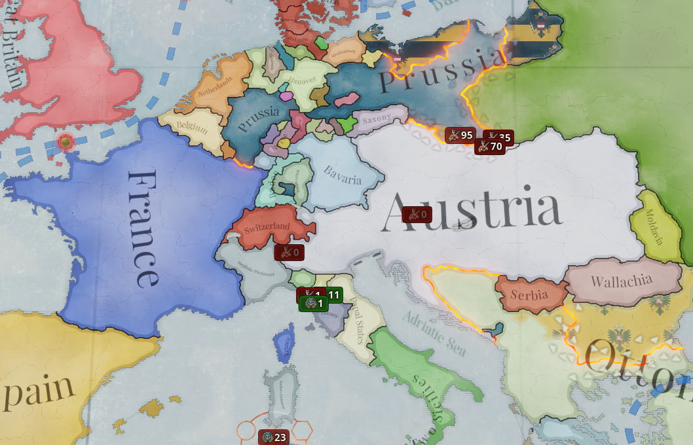
つまり、オーストリア軍はLUCCAの同盟群として加勢はしているのだが、【事実上、軍隊を他所へ送る事が出来ない状況」である。
もっとも汚いやり方ではあるが、ゲームなので許していただきたい。かくして我々はLUCCAを占拠し、
Emilia領土の一部を手に入れたわけである。
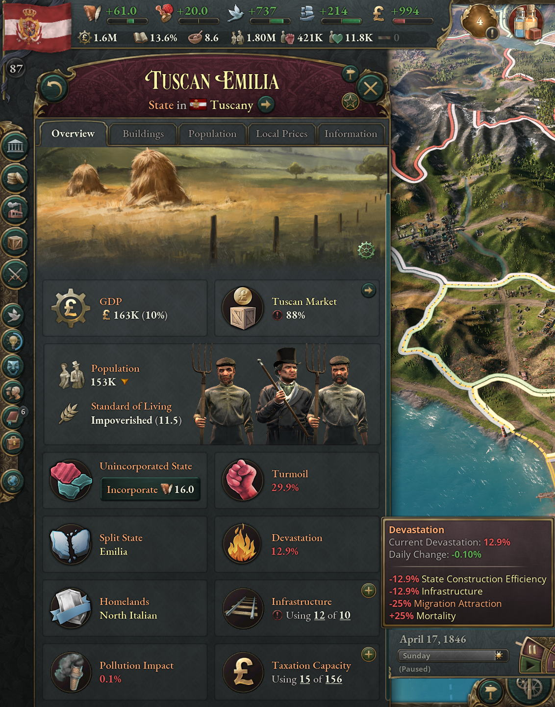
「注意」
この占拠というのも大変な作業である。当然農村民達の反抗も大きいし、破壊された街並みを
修復するための時間も必要だし、行政が行き届くまで時間と労力を費やさねばならない。
皆さん、そこの【Incorporate 16.0】というボタンを忘れずに教えてくださいね。
Victoria3は内政重視のゲームであるため、こういった行為自体が得策かと問われれば意見が分かれる所である。（つまりやらない方が良いという意見が多い）
ただ、本紹介ページではこういった事もイベントとして起こす事が出来るよ、という事を記しておきたかった。戦争は
設定が凄く簡素化されていて始まってしまえば、ほぼオートメーションである。細かいクリック操作なども不要なので
軍事もやってみたいのであれば、こういった行為を行っても良いだろう。
かくして２つのエリアを保有し、地盤を固めたかと思われた。その我々に立ちはだかる事象。それは・・・
「 Risorgimento 」
歴史専門家なら普通なのだろうが、ゲーマーにとっては聞き慣れない単語であった。
何だ、一体何が起ころうとしているんだ？
よく見てみるとこうだ。
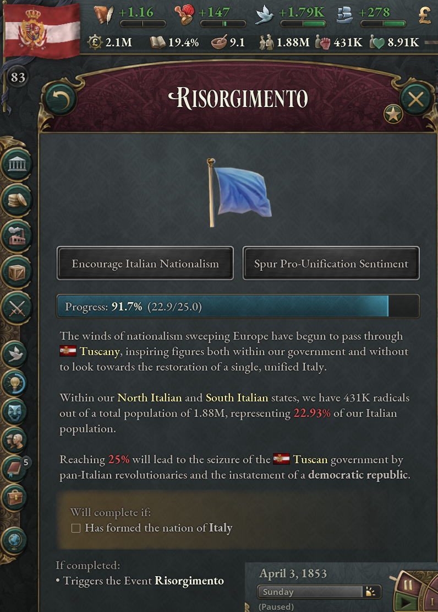
ば、ばかなぁ・・・もうイタリア建国だと！？それは我が野望のはずだが、もうそんな時期なのか！？
と焦りつつも、良く見てみると
「Reaching 25% will lead to the seizure of the Tuscan government by
pan-Italian revolutionaries and the instatement of a democratic republic.」
危うかった。どうやらいきなりイタリア建国ではなく、まずはイタリア建国向けのナショナリズムが発動しただけの様だ。
そしてこれは我らが麗しくも・・・いいや、うっとおしい事この上無かった無能な帝国官僚共を転覆させるイベントの様じゃないか！
素晴らしい！！！これは非常に美味しいシナリオだ！
何が素晴らしいのか？いいや、それ以前に、まず、何が最悪な状態なのか？
その答えはコレだ。
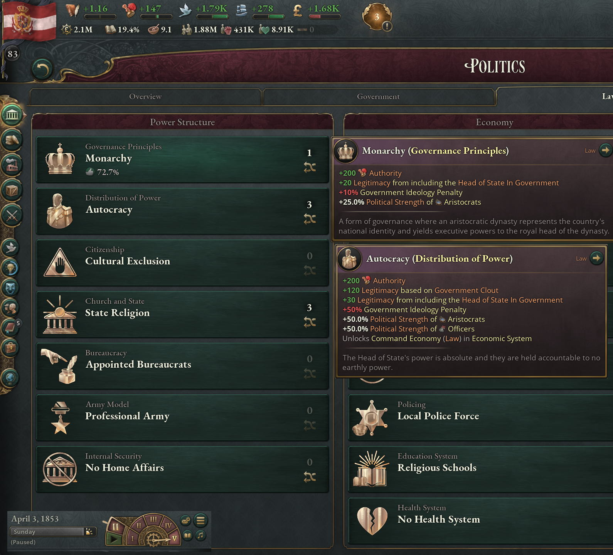
これについても、賛否両論はあるだろう。権力を握り、それに従っていただくことで民は安定して暮らせる。
それが”民にとっての幸せ”だと。。。その状態で延々と費やすゲームプレイも可能ではあるが、
それではあまりにも空しいシミュレーションゲームでしかないと言えるだろう。
ここはせっかくなのだから、この大きい２つを手放す事としようじゃないか！
Monarchy ・・・ 君主制。貴族が強いまま（逆を言えば経済を回す人の意見は通らない）
Autocracy ・・・ 専制政治。士官や貴族が強いまま（逆を言えば学者が入れず、識字も停滞しっぱなし）
こんなルールでは安定というのは名ばかりで、国そのものの成長は見込めない。
強い権力にしがみつけば一定の利益は保てる。だが、それ以上の成長は見込めない。
反乱ばかりでも問題だが、権力を抜けた先に開拓すべきビジョンが見えているならそれを選択すべきだろう。
Victoria3というゲームはこういうパラドックス的な要素を作り込んでいる所が面白いと言えるだろう。
本ページでは、Victoria3が期待する路線に従い、共和制の方へ舵取りを行う事にした。
古い体質とはオサラバし、新しい流れにきちんと乗ろう、という事だ。
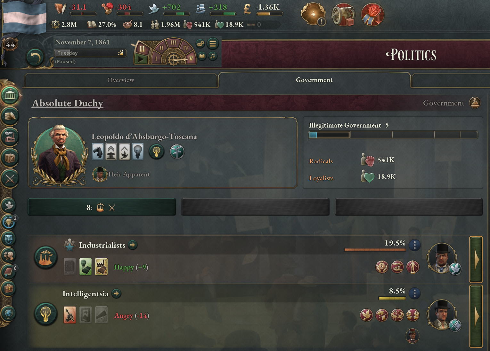
少々辛い時期ではあるが・・・
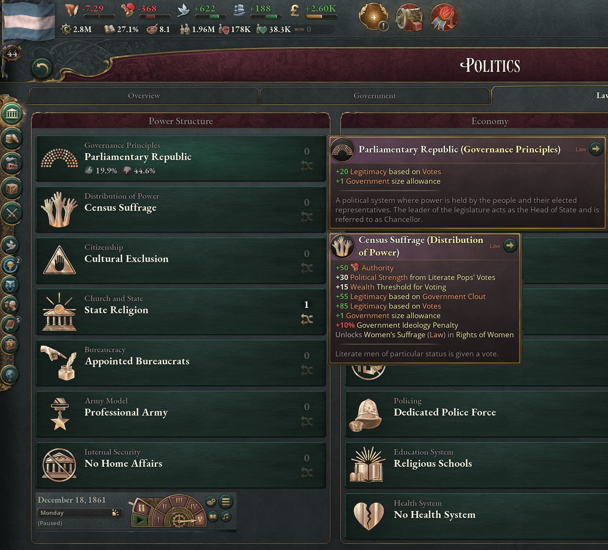
１８６１年１２月１８日。
一発でこの２つを獲得できるのは非常に大きいかった。というか果てしなく大きい！
このトスカーナという国の根幹を完全に塗り替えてくれるコア・エッセンスそのものだ。
紹介しよう。
・Parliamentary Republic ・・・ 議会共和制。いわゆる民主主義的な決め方。様々な法律が通りやすくなる（だろう）。
・Census Suffrage ・・・ 若干制限かかっている選挙制度。財力がある人しか投票権が無いが、専制政治の時代よりは良い（だろう）。
ここまで来れば、本ゲームの半分はクリアしたと思っても良い。この２か所を覆すのがどれだけ難しいか。
まず歴史的背景として、当時は地主とか協会とかが支配実行していて、それに関連して・・・・・・・（以下略）
法律と政治を上手く回せる状態になり、何年か経過し、この形。
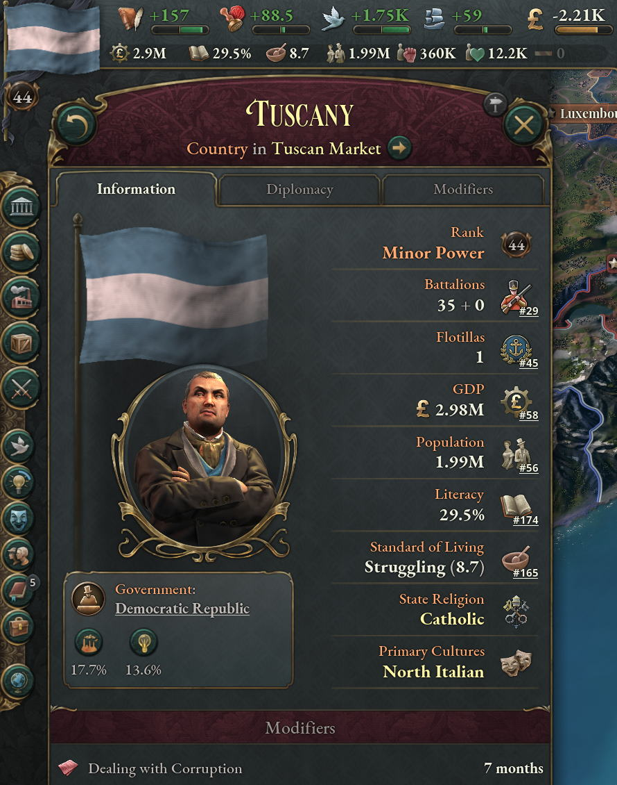
旗が変わったね。前の威厳あるカッコいい旗では無くなった。だが、これで良いのである。
旗にどれだけ威厳があったとしても中身の経済が駄目ならそれは単なる飾りしかないからだ。
ちなみに産業を発展させていく方針である以上、生産技術の要素である「Railways」は必達なので必ずGETしておくこと。
これを忘れていると本末転倒です。
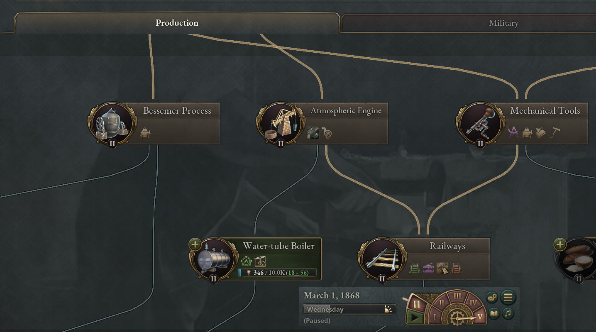
この時の内政状況としてはこのような感じか。ちょっと年数経過している割に進んでいないのは否めないが、
軍拡をした所もあるので致し方ないだろう。ギリギリボーダーラインと言った所である。
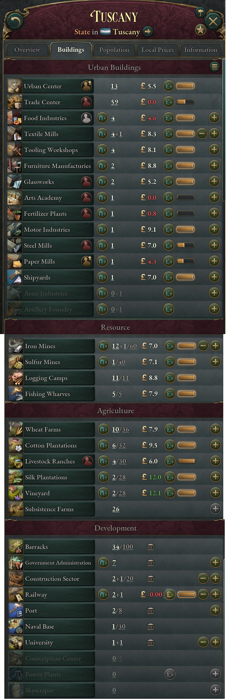
軍拡をあえて意図的に組み入れていたので、生産力はちょっと弱い感じがする。本来であれば
もっと良い組み方があるのは明白だが、紹介記事としてはこれでも十分と思えた。
これでいよいよ産業を回していく土台が整った事になる。ここまで来れば、さほど迷うターニングポイントはない。
徐々に詰めていこう。
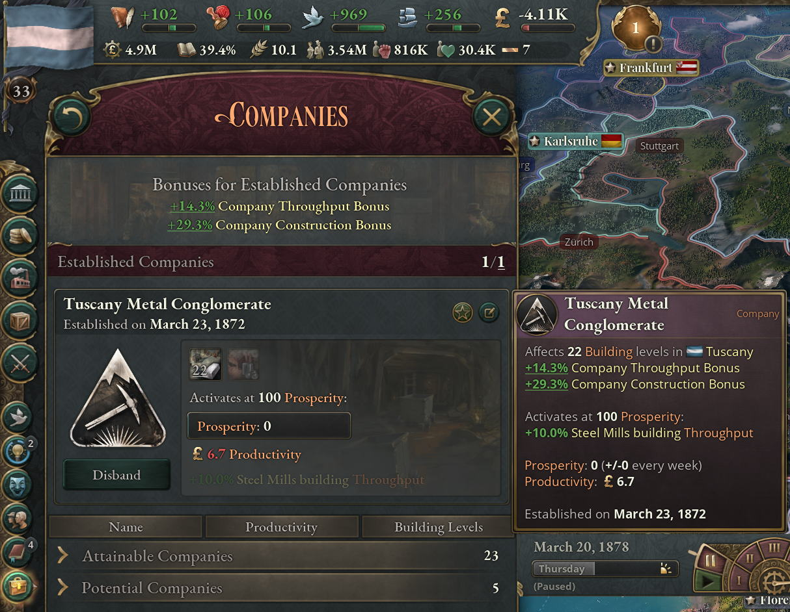
CompaniesでMetal Conglomerateを設立。
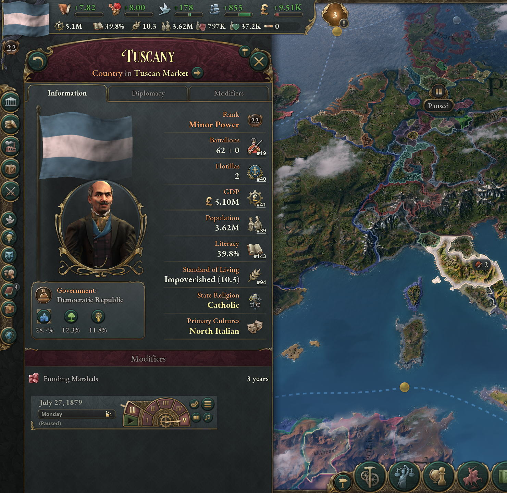
せっかく軍拡していたので、コッソリと領土を拡大。
Modenaは占拠し、Emilia領土は完全統合。PapalStateは一部拝借させていただいた。仕掛け方は最初の時と同じ手法、
オーストリアが戦時中にて執り行った。ところで、専門家はピンと来ると思うが、
「 １８７９年？史実ではもっと早い段階でイタリア建国完了だろ？そういうイベントは？？ 」
まったくもって、その通り。そのイベントは幾度となく繰り広げられていた。
しかし、これはゲームなので、いきなりそうなるわけではないのだ。
前にも出てきたRisorgimentoだが、実は達成するためにはゲームとしての条件があるのだ。
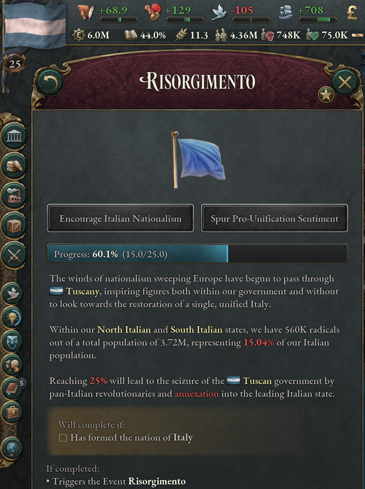
以前と同じタイトルで分かり難いのではあるが、内容が少し違うのである。
この条件が整ってしまうと、史実の通りTuscanyは併合されてしまい、国としては終了となる。
だが、このProgressが到達しない限り、ゲーム上ではイタリア建国は行われないのである。
ちなみに皆、騙されてはいけない。これが一見して「おっ、トスカーナでイタリアになれるじゃん。楽勝だね！」
と思われるかもしれない。ただし、文章をキチンと見てみよう。こう書いてある。
「 into the leading Italian state. 」
果たして現状どうか？間違いなくトスカーナはLeadingはしていないだろう。だとすると、このProgressは絶対に進行させてはいけないのだ。
本ページのお題目は、冒頭に記載したように「イタリア国家形成は我らトスカーナが行う」である。
決して、このProgressは完成させてはならない。
ちなみに、生産技術についてだが「Railways」の後にくる「Electrical Generation」も必ずGETしておくこと。
よくよく考えると線路も電力も最初は国家が頑張って形成していたんだね、と現代人の自分としては思ってしまう。
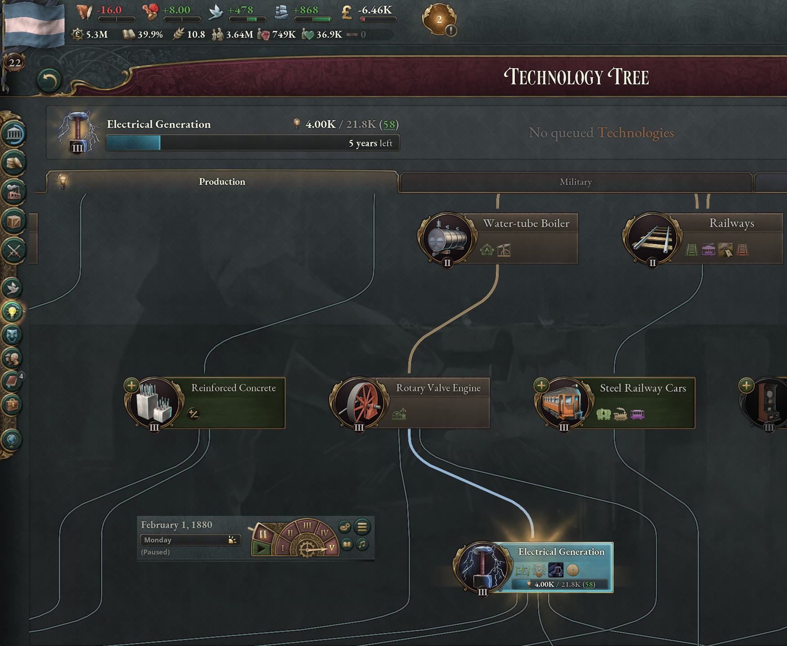
その後、着々と産業改革を進めていく・・・そんな中・・・
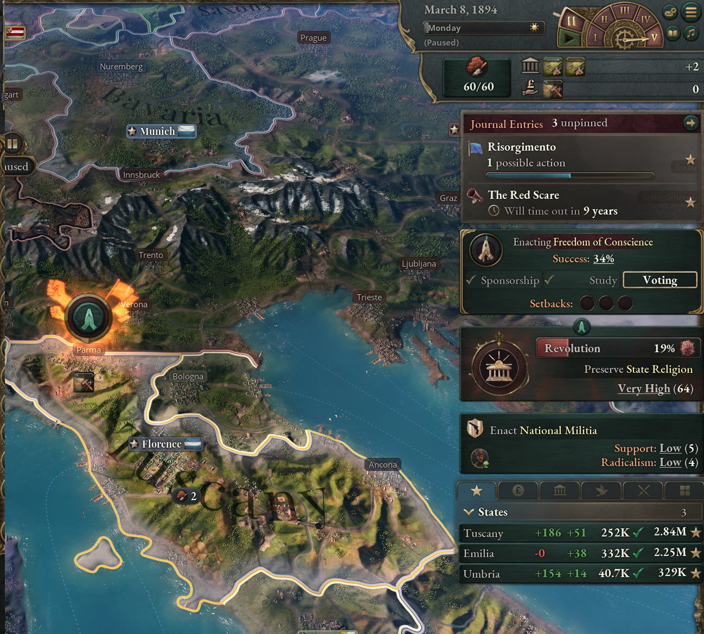
1894年３月８日。（だいぶ経過してしまったが）
未だに残存していた協会勢力にも一部ご退場いただいた。
・State Religion ・・・ 国教。宗教依存の勢力。Standard of Livingの増減影響が宗教に依存しすぎ。
・Freedom of Conscience ・・・ 良心の自由。宗教依存が少し弱まる。Standard of Livingの増減影響が宗教に少し依存しなくなる（気持ち程度）
ちなみに反乱分子の進捗が100%になると、革命勃発として国内同士で戦争が勃発してしまう。
いわゆる内部紛争というやつなので早急に武力をもって始末しないといけなくなるので”注意”が必要だ。
今回の場合、宗教の派閥はあらかじめ抑え込んでいたため、進捗が１００％になる前に法律は改定された。
「注意」
内部紛争・・・それはそれで実は、”使い道”があるんですねえ。
”使い道”については詳しくは本ページでは紹介しないが、Paradox社が提供する戦略ゲームには
大概こういう所に裏仕掛けがあると見ておいた方が良いだろう。
では総仕上げの所を紹介していこう。もう少しでゴールだ。
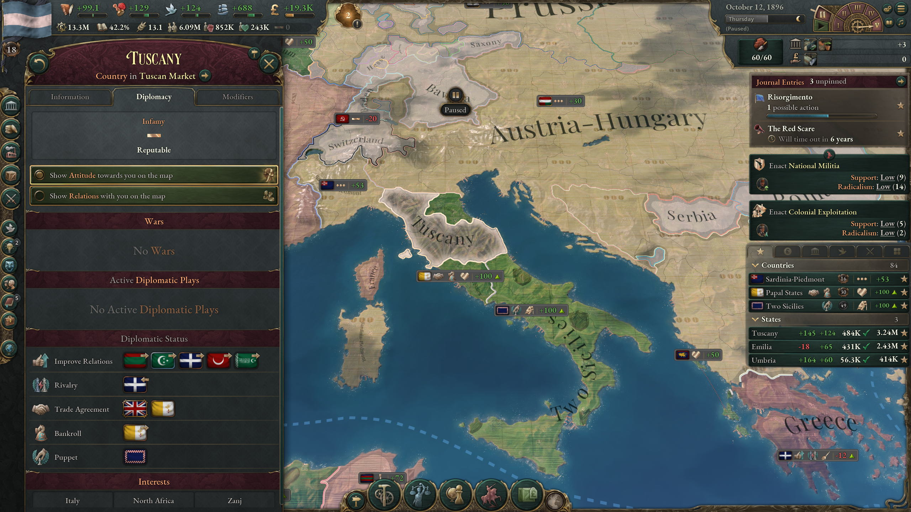
当初からある程度のビジョンを持って進行していたつもりだ。元々イタリア建国はトスカーナが行うものではない。
史実ではサルデーニャ・ピエモンテが執り行う事になっている。ただ、これはVictoria3というゲームなので、
ある程度の揺れが生じたと仮定した場合、必ずしもサルデーニャ・ピエモンテが行うとは限らない。
次の候補としてはTwo Sicilies(両シチリア）、もしくはPapalState（教皇領）だ。
彼らに対しては敵対ではなく、”前衛的な友好体制”を着々と進行させていたのである。
Victoria3の面白いポイントの一つとして、内政で打ち克つ事が明確な結果をもたらしてくれるという所だ。
その内容として、下記の通りだ。
・Two Sicilies 傀儡国として参画してもらった。これでまず１件解消。
・Papal State 貴方が我々を支援するのではない。Bankrollで我々があなた方を支援するのだ。これで１件解消。
・Sardinia-Piedmont 友好度は５３としてある。戦争が起こり得る事はなく、まだ互いに干渉するフェーズではない。
ちなみに、Risorgimentoの状況だが、Progressは55.9%。もはやこれが完遂される事はないだろう。安心してよい状況となったのだ。
さて、ここでBankrollとは何かを紹介しておこう。
・Bankroll ・・・ 融資。金を送り込む事で友好関係をさらに８０まで引き上げられる。
これだけだと関係性は＋１００にならないので（？）となる。なので、もう一つ書いておこう。これだ。
・Redeem Obligation ・・・ 恩義の解除。恩義自体は解消されるが、＋３０の友好関係が築ける。
これで対象国との関係性は＋１００を迎える事となる。後は「経済力の差」がどれだけ開くかが決定打となるだろう！
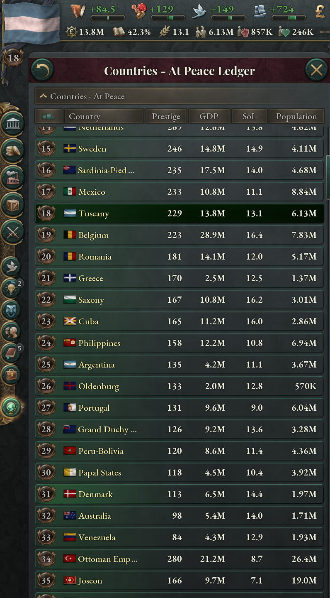
国家ランクは我々トスカーナが１８位。対象のPapalStateは３０位だ。Bankrollを引き続き行い、更にこの経済の差を付けていけば
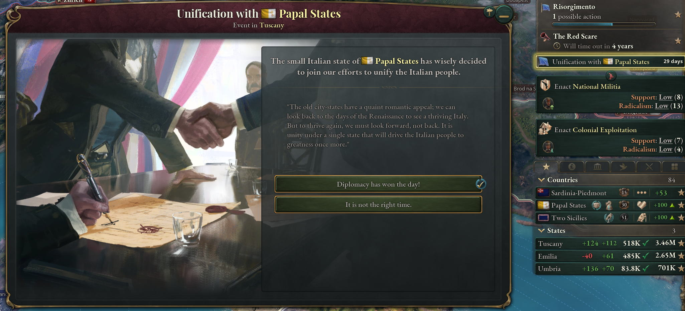
ご覧の通りだ！おそらくVictoria3としては、この手法を使う事が一番の期待値ではないだろうか。
誰も損をしていない。ただただ経済的な支援を続けただけだ。我々と共に歩んでくれることに心から感謝する。
★途中で領土を一部武力でもぎ取ってるくせに何を言うか。
★途中で一旦敵対国に認定して散々けしかけたくせに何を言うか。
★Bankrollも途中で止めたり再開したりとどっちつかずだったくせに何を言うか。
気にしない、気にしない。イタリア建国に向け、ご協力感謝する（笑）
さて、追い詰めたぞ。サルデーニャ・ピエモンテ。後はお前だけだ。
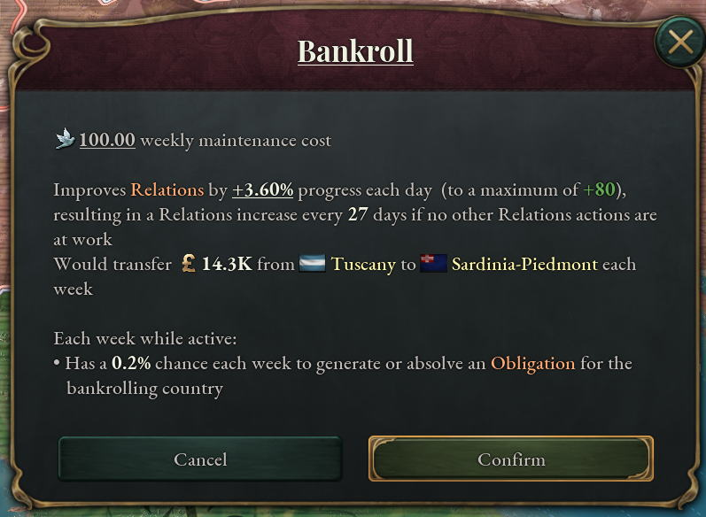
Bankrollの値は何と14.3Kも必要！？そう、しかしこれは、正確な表現ではない。
我々トスカーナは既に爆発的な産業の成長を遂げている最中なのである。
「 たったの14.3Kか。くれてやろう。 」
ここまで来たのであれば、このぐらいの値。難なく処理できるだろう。
同じ手法を適用し、
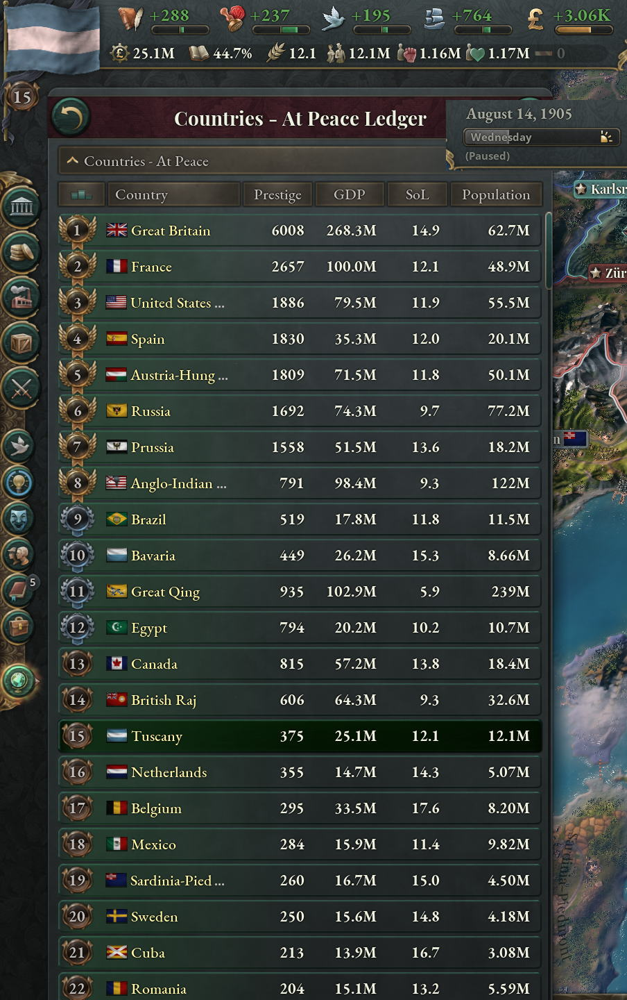
１９０５年８月１４日。サルデーニャ・ピエモンテと経済の差をどんどん拡げてゆく。そしてサルデーニャ・ピエモンテも
我々の支援を完全に快諾してくれる結果となった！
「さあ、いよいよフィナーレの刻だ！」
意外とこのボタンを知らない方々も居るかもしれないのできちんと示しておこう。
１．左メニューのCultureを選択だ。
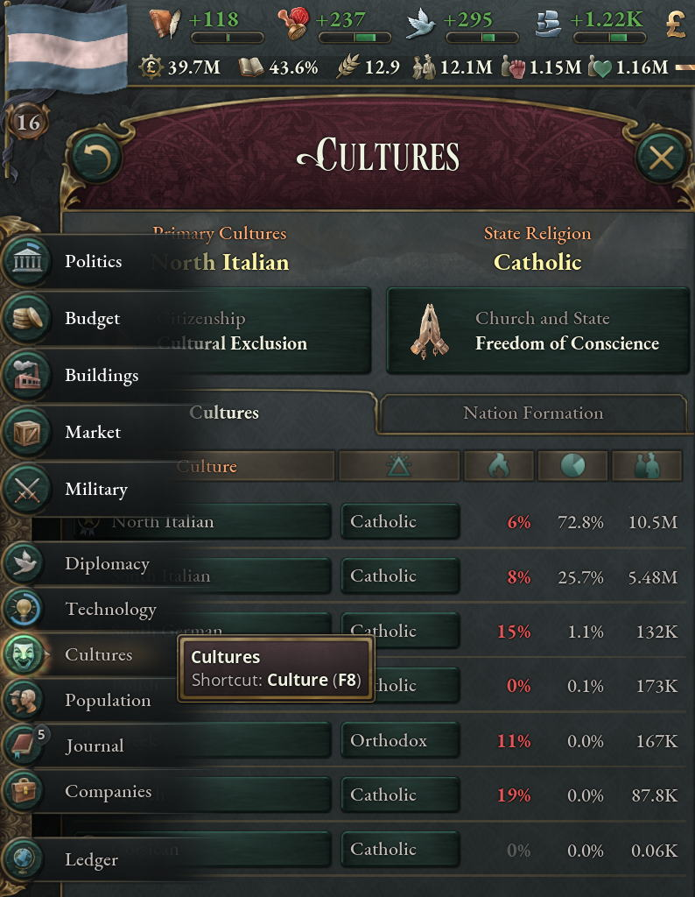
２．Nation Formationという”見え辛いタブ”を押して下記を表示するのだ。
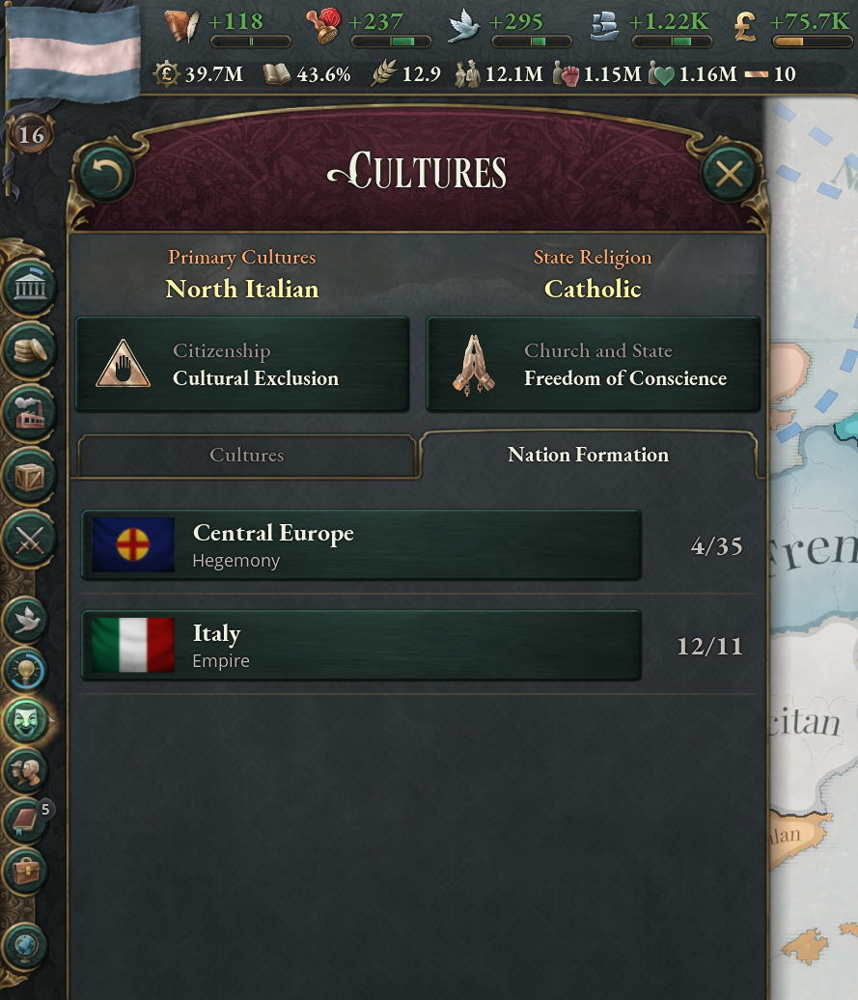
３．”ITALY”を押すのだ。
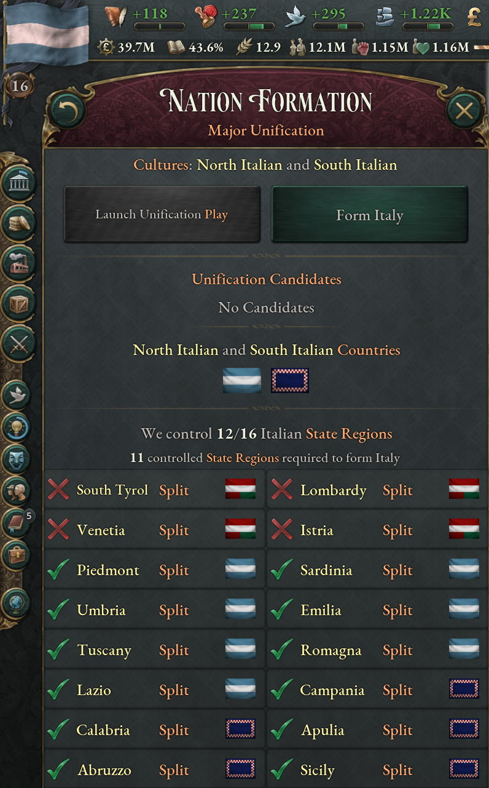
実はオーストリア４か所は取り込まなくてもOKという事になっている。優しいルールだね。
４．さあ、【FORM ITALY】のボタンを押すのだ！！！！！
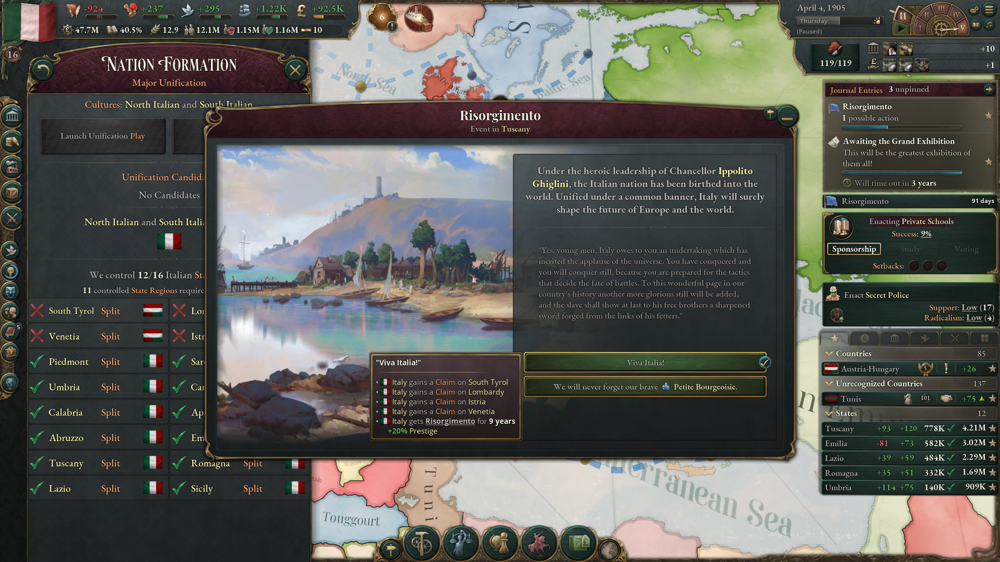
「 Viva！ Italia！ 」
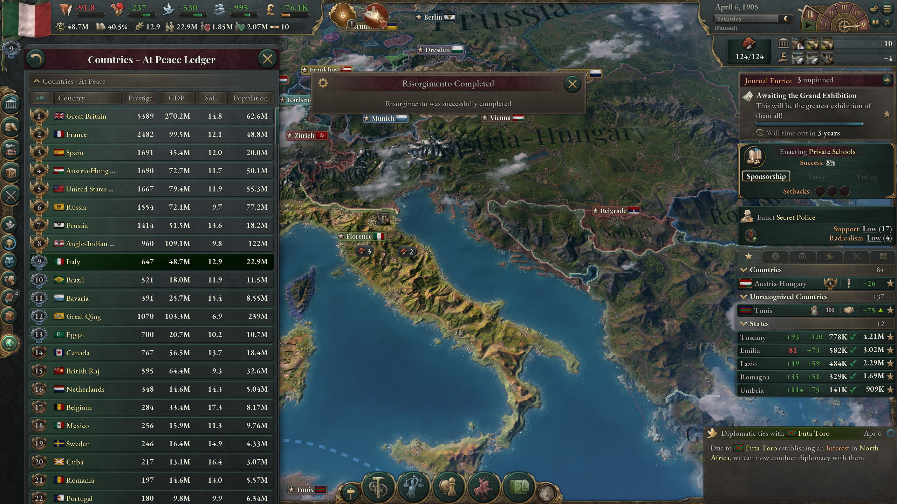
１９０５年４月６日。
トスカーナ主導で、無事にイタリア国家形成を行う事が出来ました！！！
国家ランクは９位でギリギリ列強には入れない結果となりましたが、ミッションは達成できたという事で締めたいと思います。
「おまけ」
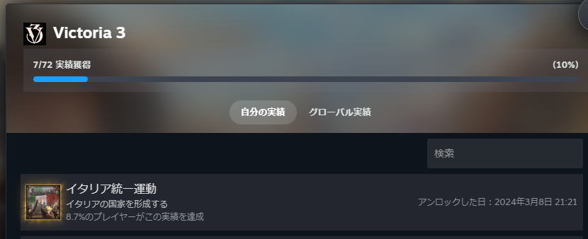
アイアンモードでなくてもSteam称号が獲得出来たのは意外でした。
Paradox社もここは少しユーザー寄り視点で緩和したのだと思います。
イタリア国家形成は8.7%も達成している所を見ると、結構人気があるんだなと思いました（＾ー＾ｖ
これにて本ページの紹介は終了となります。
・・・ ・・・ ・・・
えっ？結局内容が分からないって？
そりゃまあ、詰まる所、自分でやってみた方が良いという事でしょう！（＾ー＾；
レッツプレイ！！